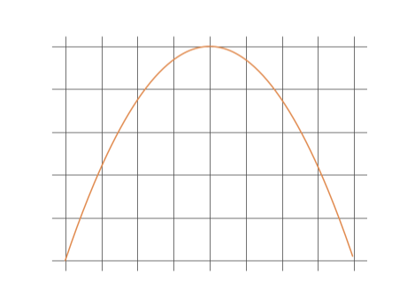
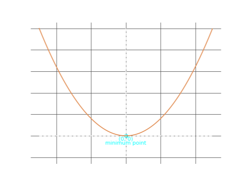
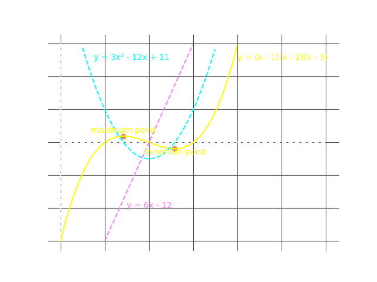
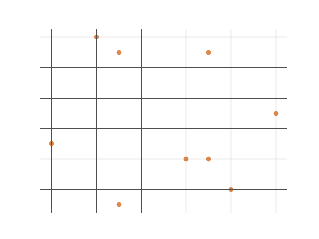
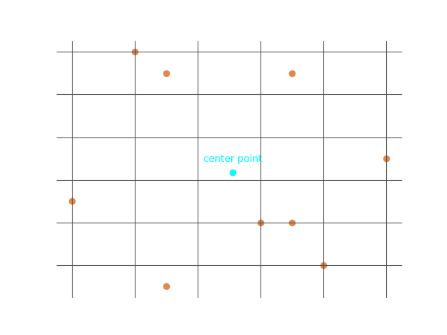
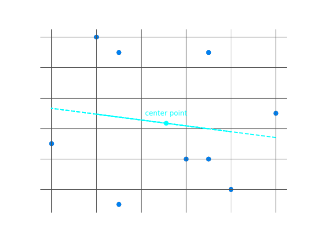

At this point, it should be well understood that the derivative of a function that represents a curved line, gives us a function that represents its gradient. There are some unique properties of these derivatives that help significantly with the solving real world problems. In this section, we will explore these ideas and look at a few real world examples illustrating its application.
Maximum and Minimum Points


The above images contain the graphs of \(y = -x^2\) and \(y = x^2\) respectively. As indicated, the graph on the left has a maximum point at \((0, \ 0)\), and the graph on the right has a minimum point at \((0, \ 0)\). At first glance, it is tempting to jump to conclusion that the maximum point is indicative of a maximum \(y\) value, while the minimum point is indicative of a minimum \(y\) value - after all, it seems to make some kind of intuitive sense based solely on the descriptions as 'maximum' and 'minimum'. However, when we speak about the maximum and minimum points on a curve, we are referring to changes in the sign of the gradient at certain points on the graph.
In general, if you were to investigate the changes in the sign of the gradient for the above curves, you would find that at the point \((0, \ 0)\), the gradient changes from positive to negative, or negative to positve - vice versa.
More specifically we can characterize the graph as having a maximum or a minimum point based on the following criteria:
For the maximum point,
Using our funtion, we can solve for the gradient at these points, \[\frac{dy}{dx} = -2x\] \[for \ \ x = -2, \ \ \ y = -(-2^2) = -4, \ \ \frac{dy}{dx} = -2(-2) = 4\] \[for \ \ x = -1, \ \ \ y = -(-1^2) = -1, \ \ \frac{dy}{dx} = -2(-1) = 2\] \[for \ \ x = 0, \ \ \ y = -(0^2) = 0, \ \ \frac{dy}{dx} = -2(0) = 0\] \[for \ \ x = 1, \ \ \ y = -(2^2) = 4, \ \ \frac{dy}{dx} = -2(1) = -2\] \[for \ \ x = 2, \ \ \ y = -(1^2) = 1, \ \ \frac{dy}{dx} = -2(2) = -4\] Looking at the above values, we can see that before the point \((0, 0)\), the gradient is positive, and after the point \((0, 0)\), the gradient is negative. This means that there is a maximum point at \((0, 0)\). This is important to consider as we can easily distinguish the nature of the graph without having to plot its values. There are even simpler ways to do this, but for now we will move on to an examination of Minimum Points. At the minimum point (much like the maximum point), the gradient is equal to \(0\). Using these properties, we can determine exactly where this point occurs, and understand its nature as minimum (or maximum as previously discussed). We can work this out as follows: \[y = x^2\] \[\frac{dy}{dx} = 2x\] at \(x = 0\), \[\frac{dy}{dx} = 2(0)\] \[\frac{dy}{dx} = 0\] \[and \ \ y = (0)^2 = 0\] Hence, we can say that the graph has either a minimum or maximum at \(x = 0, \ \ y = 0\). To understand the nature of the point, we can examine the changes in the sign of the gradient as we did earlier. Taking values of \(x\) at \(-2, -1, 0, 1, 2\): \[for \ \ x = -2, \ \ \ y = (-2^2) = 4, \ \ \frac{dy}{dx} = 2(-2) = -4\] \[for \ \ x = -1, \ \ \ y = (-1^2) = 1, \ \ \frac{dy}{dx} = 2(-1) = -2\] \[for \ \ x = 0, \ \ \ y = (0^2) = 0, \ \ \frac{dy}{dx} = 2(0) = 0\] \[for \ \ x = 1, \ \ \ y = (1^2) = 1, \ \ \frac{dy}{dx} = 2(1) = 2\] \[for \ \ x = 2, \ \ \ y = (2^2) = 4, \ \ \frac{dy}{dx} = 2(2) = 4\] Looking at the above values, we can see that before the point \((0, 0)\), the sign of the gradient is negative, and after the point \((0, 0)\), the sign of the gradient is positive. This meanse that the graph has a minimum point at \(x = 0, \ \ y = 0\).
The properties of Maximum and Minimum points are hardly intuitive, and this is seen in the exhaustive method that is used to determine there nature. Fortunately, there is a simpler way to determine the nature of a turning point as a Maximum or Minimum, but it is equally as unintutitve as previous method. We will explore this further in the next section on Inflexion Points.
In general, if you were to investigate the changes in the sign of the gradient for the above curves, you would find that at the point \((0, \ 0)\), the gradient changes from positive to negative, or negative to positve - vice versa.
More specifically we can characterize the graph as having a maximum or a minimum point based on the following criteria:
For the maximum point,
- the gradient is positive before the maximum point
- the gradient is negative after the maximum point
- the maximum point occurs at \(\frac{dy}{dx} = 0\)
- the gradient is negative before the minimum point
- the gradient is positive after the minimum point
- the minimum point occurs at \(\frac{dy}{dx} = 0\)
Using our funtion, we can solve for the gradient at these points, \[\frac{dy}{dx} = -2x\] \[for \ \ x = -2, \ \ \ y = -(-2^2) = -4, \ \ \frac{dy}{dx} = -2(-2) = 4\] \[for \ \ x = -1, \ \ \ y = -(-1^2) = -1, \ \ \frac{dy}{dx} = -2(-1) = 2\] \[for \ \ x = 0, \ \ \ y = -(0^2) = 0, \ \ \frac{dy}{dx} = -2(0) = 0\] \[for \ \ x = 1, \ \ \ y = -(2^2) = 4, \ \ \frac{dy}{dx} = -2(1) = -2\] \[for \ \ x = 2, \ \ \ y = -(1^2) = 1, \ \ \frac{dy}{dx} = -2(2) = -4\] Looking at the above values, we can see that before the point \((0, 0)\), the gradient is positive, and after the point \((0, 0)\), the gradient is negative. This means that there is a maximum point at \((0, 0)\). This is important to consider as we can easily distinguish the nature of the graph without having to plot its values. There are even simpler ways to do this, but for now we will move on to an examination of Minimum Points. At the minimum point (much like the maximum point), the gradient is equal to \(0\). Using these properties, we can determine exactly where this point occurs, and understand its nature as minimum (or maximum as previously discussed). We can work this out as follows: \[y = x^2\] \[\frac{dy}{dx} = 2x\] at \(x = 0\), \[\frac{dy}{dx} = 2(0)\] \[\frac{dy}{dx} = 0\] \[and \ \ y = (0)^2 = 0\] Hence, we can say that the graph has either a minimum or maximum at \(x = 0, \ \ y = 0\). To understand the nature of the point, we can examine the changes in the sign of the gradient as we did earlier. Taking values of \(x\) at \(-2, -1, 0, 1, 2\): \[for \ \ x = -2, \ \ \ y = (-2^2) = 4, \ \ \frac{dy}{dx} = 2(-2) = -4\] \[for \ \ x = -1, \ \ \ y = (-1^2) = 1, \ \ \frac{dy}{dx} = 2(-1) = -2\] \[for \ \ x = 0, \ \ \ y = (0^2) = 0, \ \ \frac{dy}{dx} = 2(0) = 0\] \[for \ \ x = 1, \ \ \ y = (1^2) = 1, \ \ \frac{dy}{dx} = 2(1) = 2\] \[for \ \ x = 2, \ \ \ y = (2^2) = 4, \ \ \frac{dy}{dx} = 2(2) = 4\] Looking at the above values, we can see that before the point \((0, 0)\), the sign of the gradient is negative, and after the point \((0, 0)\), the sign of the gradient is positive. This meanse that the graph has a minimum point at \(x = 0, \ \ y = 0\).
The properties of Maximum and Minimum points are hardly intuitive, and this is seen in the exhaustive method that is used to determine there nature. Fortunately, there is a simpler way to determine the nature of a turning point as a Maximum or Minimum, but it is equally as unintutitve as previous method. We will explore this further in the next section on Inflexion Points.
Inflexion Point
In this section, I would like to discuss what is known as an inflexion point. This is a unique point on curve where the curvature changes from concave upwards to concave downwards (or vice versa), as shown in the graph below.

In the above graph, the inflexion point occurs directly between a maximum and minimum point. It should be noted that this is not the case for all inflexion points, as in some cases the curve bends in such a way that the maximum and minimum points occur directly at the point of inflexion rather than before and after. Regardless, the inflexion point is in all cases considered to be simaltaneously a maximum and minimum point.
The equation for the curve above is given by: \[y = (x - 1)(x - 2)(x - 3)\] which we can simplify to: \[y = x^3 - 6x^2 + 11x - 6\] we can also easily find its gradient function (which is also plotted above), \[\frac{dy}{dx} = 3x^2 - 12x + 11\] and for simplicity sake I will also calculate the second order differential as it of interest concerning the unique properties of the inflexion point. \[\frac{d^{2}y}{dx^2} = 6x - 12\] This function is also plotted in the above graph.
We have already discussed how to find maximum and minimum points. They occur at \(\frac{dy}{dx} = 0\). Lets solve this quickly. \[\frac{dy}{dx} = 0\] \[3x^2 - 12x + 11 = 0\] \[...\] \[x = 1.42 \ \ \ and \ \ \ x = 2.58\] Thus, we can see that our maximum and minimum points occur at \(x = 1.42\) and \(x = 2.58\). In the previous section, we used an exhaustive technique to show that the curve approaches either a minimum or maximum value based on changes in the sign of the gradient before and after the points. However, there is a simpler way. One of the unqiue properties of these points, is that the second order differential (\(\frac{d^{2}y}{dx^2}\)) yields a negative value at a maximum point, or a positive value at a minimum point. If the point is neither - i.e. a point of inflexion - the value of \(\frac{d^{2}y}{dx^2} = 0\). Using this property, we can check which of our points is a maximum or minimum, and we can also solve for the value at which the point of inflexion occurs. At \(x = 1.42\), \[\frac{d^{2}y}{dx^2} = 6(1.42) - 12\] \[\frac{d^{2}y}{dx^2} = -3.48\] The sign is negative and hence, the maximum point occurs at \(x = 1.42\) At \(x = 2.58\), \[\frac{d^{2}y}{dx^2} = 6(2.58) - 12\] \[\frac{d^{2}y}{dx^2} = 3.48\] The sign is positive and hence, the minimum point occurs at \(x = 2.58\) At \(\frac{d^{2}y}{dx^2} = 0\), the point of inflexion occurs, \[\frac{d^{2}y}{dx^2} = 0\] \[6x - 12 = 0\] \[x = \frac{12}{6} = 2\] Hence, the point of inflexion occurs at \((2, 0)\)
It's interesting to think about why the sign of \(\frac{d^{2}y}{dx^2}\) changes based on whether the function is at a maximum or minimum. At first glance it may appear arbitrary, but if you think about it, before the function approaches a turning point it has to be increasingly positive or negative. Any derived function will reflect the nature of the original function - including the second order derivative. Consequently, this presents itself as a value for \(\frac{d^{2}y}{dx^2}\) that is wholly negative or positive.
The equation for the curve above is given by: \[y = (x - 1)(x - 2)(x - 3)\] which we can simplify to: \[y = x^3 - 6x^2 + 11x - 6\] we can also easily find its gradient function (which is also plotted above), \[\frac{dy}{dx} = 3x^2 - 12x + 11\] and for simplicity sake I will also calculate the second order differential as it of interest concerning the unique properties of the inflexion point. \[\frac{d^{2}y}{dx^2} = 6x - 12\] This function is also plotted in the above graph.
We have already discussed how to find maximum and minimum points. They occur at \(\frac{dy}{dx} = 0\). Lets solve this quickly. \[\frac{dy}{dx} = 0\] \[3x^2 - 12x + 11 = 0\] \[...\] \[x = 1.42 \ \ \ and \ \ \ x = 2.58\] Thus, we can see that our maximum and minimum points occur at \(x = 1.42\) and \(x = 2.58\). In the previous section, we used an exhaustive technique to show that the curve approaches either a minimum or maximum value based on changes in the sign of the gradient before and after the points. However, there is a simpler way. One of the unqiue properties of these points, is that the second order differential (\(\frac{d^{2}y}{dx^2}\)) yields a negative value at a maximum point, or a positive value at a minimum point. If the point is neither - i.e. a point of inflexion - the value of \(\frac{d^{2}y}{dx^2} = 0\). Using this property, we can check which of our points is a maximum or minimum, and we can also solve for the value at which the point of inflexion occurs. At \(x = 1.42\), \[\frac{d^{2}y}{dx^2} = 6(1.42) - 12\] \[\frac{d^{2}y}{dx^2} = -3.48\] The sign is negative and hence, the maximum point occurs at \(x = 1.42\) At \(x = 2.58\), \[\frac{d^{2}y}{dx^2} = 6(2.58) - 12\] \[\frac{d^{2}y}{dx^2} = 3.48\] The sign is positive and hence, the minimum point occurs at \(x = 2.58\) At \(\frac{d^{2}y}{dx^2} = 0\), the point of inflexion occurs, \[\frac{d^{2}y}{dx^2} = 0\] \[6x - 12 = 0\] \[x = \frac{12}{6} = 2\] Hence, the point of inflexion occurs at \((2, 0)\)
It's interesting to think about why the sign of \(\frac{d^{2}y}{dx^2}\) changes based on whether the function is at a maximum or minimum. At first glance it may appear arbitrary, but if you think about it, before the function approaches a turning point it has to be increasingly positive or negative. Any derived function will reflect the nature of the original function - including the second order derivative. Consequently, this presents itself as a value for \(\frac{d^{2}y}{dx^2}\) that is wholly negative or positive.
General Rules
A lot of information regarding the properties of curves have been discussed so far, and its important to note that these properties are hardly intuitive - especially for someone encountering them for the first time. That being said, they do appeal to very general rules that have direct relevance to problems in our daily lives. I will illustrate some of these problems later on, but first I want to create a list of rules that can generally capture what we've discussed about maximum points, minimum points and points of inflexion.
Rules for Maximum Points
- The gradient is equal to \(0\), \[\frac{dy}{dx} = 0\]
- The sign of the second order differential co-efficient is always negative at the maximum point, \[\frac{d^{2}y}{dx^2} \ \ is \ \ negative\]
- The gradient is positive before the maximum point
- The gradient is negative after the maximum point
Rules for Minimum Points
- The gradient is equal to \(0\), \[\frac{dy}{dx} = 0\]
- The sign of the second order differential co-efficient is always positive at the minimum point, \[\frac{d^{2}y}{dx^2} \ \ is \ \ positive\]
- The gradient is negative before the minimum point
- The gradient is positive after the minimum point
Rules for Inflexion Points
- The inflexion point occurs where \(\frac{d^{2}y}{dx} = 0\)
- The gradient is either negative before the point and positive after, or positive before the point and negative after (vice-versa).
- The gradient (\(\frac{dy}{dx}\)) is a minimum at the inflexion point, but is not necessarily equal to 0
- The inflexion point itself, is always simaltaneously a maximum and minimum point
- The inflexion point may or may not occur in between a unqiue maximum and minimum point
Worked Examples
Most often, worked examples are used to illustrate the step by step solution to a problem in order to give the person reading an understanding of the general algebraic complexity and key ideas in manipulating different variables. While this section does provide worked explanations in this way, the primary intention is to convey the key intuition behind the practical usage of maximum and minimum points in calculus. This will become more apparent as we delve into real word problems. However, I still begin with some soultions to simple questions.
Find the maximum and minimum points on the curve given by the following function:
\[y = x^3 - 12x\]
We know that the maximum and minimum points occur at \(\frac{dy}{dx} = 0\), hence
\[\frac{dy}{dx} = 3x^2 - 12\]
at \(0\),
\[3x^2 - 12 = 0\]
\[3x^2 = 12\]
\[x^2 = 4\]
\[x = \sqrt{4}\]
\[x = +2, -2\]
Hence the curve may have a minimum value at \(x = 2\), or \(x = -2\). To determine which point is a maximum and which is a minimum we can check the sign of \(\frac{d^{2}y}{dx^2}\).
\[\frac{d^{2}y}{dx^2} = 6x\]
at \(x = 2\),
\[\frac{d^{2}y}{dx^2} = 6(2) = 12\]
The sign is positive. Hence, a minimum point occurs at \(x = 2\)
at \(x = -2\)
\[\frac{d^{2}y}{dx^2} = 6(-2) = -12\]
The sign is negative. Hence, a maximum point occurs at \(x = -2\)
To obtain the \(y\) coordinate of our maximum and minimum points, we can simply substitute our \(x\) value into the function and solve.
at \(x = 2\), \[y = (2)^3 - 12(2)\] \[y = -16\] Hence, the minimum point occurs at \((2, \ -16)\).
at \(x = -2\), \[y = (-2)^3 - 12(-2)\] \[y = 16\] Hence, the maximum point occurs at \((-2, \ 16)\).
A particle is projected at an angle \(\theta\) with initial velocity \(u\). Its horizontial displacement \(x\) and height\(y\) are connected by the equation:
\[y = x\tan \theta - \frac{gx^2}{2u^2\cos^2\theta}\]
What is the maximum height to which the particle rises, and how far has it travelled horizontally? (\(g\) is the acceleration due to gravity, a constant.)
We can begin to solve this equation by simplifying our expression a bit. \[let \ a = \tan\theta\] \[let \ b = \cos^2\theta\] Hence, \[y = ax - \frac{gx^2}{2bu^2}\] \[y = ax - \frac{g}{2bu^2}x^2\] Solving for \(\frac{dy}{dx}\) \[\frac{dy}{dx} = a - \frac{gx}{bu^2}\] \[\frac{dy}{dx} = \frac{abu^2 - gx}{bu^2}\] Based on the description given in the question, we can assume that this particle is travelling in parabolic motion and attains a maximum height that is analagous to a maximum point on a curve describing its motion. We know that the gradient at the maximum is zero, hence we can solve for maximum point. \[\frac{abu^2 - gx}{bu^2} = 0\] \[abu^2 - gx = 0\] \[gx = abu^2\] \[x = \frac{abu^2}{g}\] Substituting our values for \(a\) and \(b\), \[x = \frac{\tan(\theta)\cos^2(\theta) u^2}{g}\] Hence, the maximum \(x\) value occurs at \(x = \frac{\tan(\theta)\cos^2(\theta) u^2}{g}\). However, we are interested in the maximum height. This means we need to solve for the \(y\) value. Using our simpler format for x, \[y = a (\frac{abu^2}{g}) - \frac{g(\frac{abu^2}{g})^2}{2u^2b}\] \[...\] \[y = \frac{a^2bu^2}{g} - \frac{a^2bu^2}{2g}\] \[y = \frac{a^2bu^2}{2g}\] Substituting our trigonometric values, \[y = \frac{\tan^2(\theta)\cos^2(\theta) u^2}{2g}\] \[y = \frac{u^2\sin^2\theta}{2g}\] Hence, the particle attains a maximum height at \(y = \frac{u^2\sin^2\theta}{2g}\). We would also like to know the distance the particle has travelled horizontally. We know that the curve describing its motion is going to cut the \(x\) axis at 0 - rest - and at the farthest point travelled. Hence we can set the function equal to 0 and solve for this point. \[y = ax - \frac{gx^2}{2bu^2}\] Hence, \[ax - \frac{gx^2}{2bu^2} = 0\] \[\frac{gx^2}{2bu^2} = ax\] \[gx^2 = 2abu^2x\] \[gx = 2abu^2\] \[x = \frac{2abu^2}{g}\] Substituting our trigonometric functions: \[x = \frac{2u^2\tan(\theta)\cos^2(\theta)}{g}\] This can be simplified to \[x = \frac{u^2\sin(2\theta)}{g}\] Hence, the particle achieves maximum horizontal distance at \(x = \frac{u^2\sin(2\theta)}{g}\)
Problems involving parabolic motion are quite common in elementary math and serve the very useful purpose of demostrating the practical application of math in a relatable way. However, there is another angle that we can take with respect to exploring the practical application of calculus. In fact the primary point of the section is to explore these ideas in particular. What I'm referring to is known as an optimization problem, and even at low levels they can make questions of parabolic motion look rather cute and underwhelming.
In this example I am going to explore a problem that is similar to some historically famous issues that were tackled by mathematicians like Fermat and Descartes. The problem itself is no more than a novel conundrum that might amuse a mathematician, but it's the intuition behind it's solution that is important. The problem is as follows:
A rectangular sheet of tin, \(30cm * 24cm\), has four equal squares cut out at the corners, and the sides are then turned up to form a rectangular box. What must be the length of the side of each square cut away so that the volume of the box may be as great as possible?
How would you solve this? The answer is a simple one, but what it takes to arrive at the solution is a test of how comfortable you are with applying calculus (or math) to the real world. I make a point of saying this because most of us are not as comfortable as I indicated you should be. After all, serious application of math is a rarity even in the age of Artificial Intelligence. (AI is itself an optimization problem - take note.)
The first step is to derive the function that represents the change in the sheet of tin based on the knowledge that has been provided. I use the word derive liberally in this context, as the derivation is extremely intuitive. Lets examine what we know:
The volume is given by the function \[V = length * width * height\] The length and width are known variables, wheares the height is unknown. We can represent this as follows: \[V = 30 * 24 * x\] Since the length of the sides decrease in proportion as the height increases, we can write: \[V = (30 - x)(24 - x)(x)\] Squares are cut out, so the amount subtracted from the length is equivalent to the amount subtracted from the height, as is represented in the above equation. However, we are cutting out squares from all four corners. This means subtracting the same amount from both sides of the length and the width. Hence the change is actually represented by \[V = (30 - 2x)(24 - 2x)(x)\] And there you have it! The above function describes the change in volume of our sheet of tin. Expanding you get \[V = (720 - 60x - 48x + 4x^2)(x)\] \[V = 4x^3 - 108x^2 + 720x\] So the change in volume of our tin sheet as it is made into a rectangular box is described by the above function. What we want to know, is what height corresponds to a maximum volume in the tin sheet. This part is simple. The function clearly represents a curve, and our understanding of maximum and minimum value on a curve is readily applicable.
Differentiating, I get \[\frac{dV}{dx} = 12x^2 - 216x + 720\] At the maximum, the gradient is 0, hence \[12x^2 - 216x + 720 = 0\] \[x^2 - 18x + 60 = 0\] Using our quadratic formula, \[a = 1, \ \ b = -18, \ \ c = 60\] \[x = \frac{18 \pm \sqrt{(-18^2) - 4(1)(60)}}{2(1)}\] \[x = \frac{18 \pm \sqrt{324 - 240}}{2}\] \[x = \frac{18 \pm \sqrt{84}}{2}\] \[x = \frac{18 \pm 9.165}{2}\] \[x = 13.58, \ 4.4175\] We can check for a maximum point using \(\frac{d^2y}{dx^2}\), \[\frac{d^2y}{dx^2} = 24x - 216\] at \(x = 13.58\), \[\frac{d^2y}{dx^2} = 24(13.58) - 216 = 109.92\] The answer is positive, hence this is a minimum point, not a maximum. At \(x = 4.4175\), \[\frac{d^2y}{dx^2} = 24(4.4175) - 216 = -109.98\] The answer is negative, hence the maximum point occurs at \(x = 4.4175cm\). Thus, the maximum volume is achieved when the square cut out of the tin sheet has a side of \(4.4175cm\).
Having been through the previous problem it should be clear that the 'opitmization' problem as was presented is not at heart reliant on a logical understanding of algebra, calculus, or any other branch of math thereafter. In fact, your ability to arrive at a soultion is tied to your conceptualization of the problem. This in itself constitutes the mathematical muscle that we so rarely ever flex, and is vitally important to the application of math to the real world.
To expand on this idea I am going to delve into a final example in this section. Specifically we are going to look at a derivation of linear regression, which should reflect clearly the mathematical brawn of optimization. The calculus behind the derivation is slightly beyond the topics that have been covered so far, as it extends to partial differentiation. However, the key intuition is firmly rooted in an understanding of the properties of curves - particularly, the idea of the maximum and minimum point.
To begin with, lets consider the following randomly scattered set of datapoints.
The keywords here are "any given set of data." This is where our randomly scattered datapoints come in handy. If I can mathematically determine what the relationship is between the datapoints that have been generated randomly, I would have a solution that I can apply to "any given set of data". With respect to linear regression, the relationship that we want to understand has to do with how the variable in \(y\) changes as the variable in \(x\) changes. From a glance you can tell that the datapoints do not conform to a straight line or curve that we can use as a starting point. Instead, lets borrow a simple idea in statistics - the mean. Let's assume that their is a relationship between \(x\) and \(y\), and that this relationship revolves around the center of the data. Below, you can see this central plotted on the graph.
The solution to this idea is essentially what we know as linear regression. While it is not an overarching solution to all variables \(x\) and \(y\), it does allow us at the very least a pathway by which we can rule out one of the possible relationships between any two variables. To arrive at a solution we must consider an imaginary line passing through the center of our data. This is illustrated below.
Example One
at \(x = 2\), \[y = (2)^3 - 12(2)\] \[y = -16\] Hence, the minimum point occurs at \((2, \ -16)\).
at \(x = -2\), \[y = (-2)^3 - 12(-2)\] \[y = 16\] Hence, the maximum point occurs at \((-2, \ 16)\).
Example two
We can begin to solve this equation by simplifying our expression a bit. \[let \ a = \tan\theta\] \[let \ b = \cos^2\theta\] Hence, \[y = ax - \frac{gx^2}{2bu^2}\] \[y = ax - \frac{g}{2bu^2}x^2\] Solving for \(\frac{dy}{dx}\) \[\frac{dy}{dx} = a - \frac{gx}{bu^2}\] \[\frac{dy}{dx} = \frac{abu^2 - gx}{bu^2}\] Based on the description given in the question, we can assume that this particle is travelling in parabolic motion and attains a maximum height that is analagous to a maximum point on a curve describing its motion. We know that the gradient at the maximum is zero, hence we can solve for maximum point. \[\frac{abu^2 - gx}{bu^2} = 0\] \[abu^2 - gx = 0\] \[gx = abu^2\] \[x = \frac{abu^2}{g}\] Substituting our values for \(a\) and \(b\), \[x = \frac{\tan(\theta)\cos^2(\theta) u^2}{g}\] Hence, the maximum \(x\) value occurs at \(x = \frac{\tan(\theta)\cos^2(\theta) u^2}{g}\). However, we are interested in the maximum height. This means we need to solve for the \(y\) value. Using our simpler format for x, \[y = a (\frac{abu^2}{g}) - \frac{g(\frac{abu^2}{g})^2}{2u^2b}\] \[...\] \[y = \frac{a^2bu^2}{g} - \frac{a^2bu^2}{2g}\] \[y = \frac{a^2bu^2}{2g}\] Substituting our trigonometric values, \[y = \frac{\tan^2(\theta)\cos^2(\theta) u^2}{2g}\] \[y = \frac{u^2\sin^2\theta}{2g}\] Hence, the particle attains a maximum height at \(y = \frac{u^2\sin^2\theta}{2g}\). We would also like to know the distance the particle has travelled horizontally. We know that the curve describing its motion is going to cut the \(x\) axis at 0 - rest - and at the farthest point travelled. Hence we can set the function equal to 0 and solve for this point. \[y = ax - \frac{gx^2}{2bu^2}\] Hence, \[ax - \frac{gx^2}{2bu^2} = 0\] \[\frac{gx^2}{2bu^2} = ax\] \[gx^2 = 2abu^2x\] \[gx = 2abu^2\] \[x = \frac{2abu^2}{g}\] Substituting our trigonometric functions: \[x = \frac{2u^2\tan(\theta)\cos^2(\theta)}{g}\] This can be simplified to \[x = \frac{u^2\sin(2\theta)}{g}\] Hence, the particle achieves maximum horizontal distance at \(x = \frac{u^2\sin(2\theta)}{g}\)
Example Three
In this example I am going to explore a problem that is similar to some historically famous issues that were tackled by mathematicians like Fermat and Descartes. The problem itself is no more than a novel conundrum that might amuse a mathematician, but it's the intuition behind it's solution that is important. The problem is as follows:
A rectangular sheet of tin, \(30cm * 24cm\), has four equal squares cut out at the corners, and the sides are then turned up to form a rectangular box. What must be the length of the side of each square cut away so that the volume of the box may be as great as possible?
How would you solve this? The answer is a simple one, but what it takes to arrive at the solution is a test of how comfortable you are with applying calculus (or math) to the real world. I make a point of saying this because most of us are not as comfortable as I indicated you should be. After all, serious application of math is a rarity even in the age of Artificial Intelligence. (AI is itself an optimization problem - take note.)
The first step is to derive the function that represents the change in the sheet of tin based on the knowledge that has been provided. I use the word derive liberally in this context, as the derivation is extremely intuitive. Lets examine what we know:
- We know that the length of the sides of the sheet of tin is changing.
- We know that the length of one side is 30cm, and the length of the other side is 24cm.
- Since squares have been cut out from each corner, we know that the length of each side is decreasing.
- Since the sides are folded up to make a box from the point that the squares are cut, we know that the volume increases as the sides decrease, i.e. from no volume to some maximum
- We know that the volume of a rectangle is given by the \(length * width * height\).
The volume is given by the function \[V = length * width * height\] The length and width are known variables, wheares the height is unknown. We can represent this as follows: \[V = 30 * 24 * x\] Since the length of the sides decrease in proportion as the height increases, we can write: \[V = (30 - x)(24 - x)(x)\] Squares are cut out, so the amount subtracted from the length is equivalent to the amount subtracted from the height, as is represented in the above equation. However, we are cutting out squares from all four corners. This means subtracting the same amount from both sides of the length and the width. Hence the change is actually represented by \[V = (30 - 2x)(24 - 2x)(x)\] And there you have it! The above function describes the change in volume of our sheet of tin. Expanding you get \[V = (720 - 60x - 48x + 4x^2)(x)\] \[V = 4x^3 - 108x^2 + 720x\] So the change in volume of our tin sheet as it is made into a rectangular box is described by the above function. What we want to know, is what height corresponds to a maximum volume in the tin sheet. This part is simple. The function clearly represents a curve, and our understanding of maximum and minimum value on a curve is readily applicable.
Differentiating, I get \[\frac{dV}{dx} = 12x^2 - 216x + 720\] At the maximum, the gradient is 0, hence \[12x^2 - 216x + 720 = 0\] \[x^2 - 18x + 60 = 0\] Using our quadratic formula, \[a = 1, \ \ b = -18, \ \ c = 60\] \[x = \frac{18 \pm \sqrt{(-18^2) - 4(1)(60)}}{2(1)}\] \[x = \frac{18 \pm \sqrt{324 - 240}}{2}\] \[x = \frac{18 \pm \sqrt{84}}{2}\] \[x = \frac{18 \pm 9.165}{2}\] \[x = 13.58, \ 4.4175\] We can check for a maximum point using \(\frac{d^2y}{dx^2}\), \[\frac{d^2y}{dx^2} = 24x - 216\] at \(x = 13.58\), \[\frac{d^2y}{dx^2} = 24(13.58) - 216 = 109.92\] The answer is positive, hence this is a minimum point, not a maximum. At \(x = 4.4175\), \[\frac{d^2y}{dx^2} = 24(4.4175) - 216 = -109.98\] The answer is negative, hence the maximum point occurs at \(x = 4.4175cm\). Thus, the maximum volume is achieved when the square cut out of the tin sheet has a side of \(4.4175cm\).
Example Four
To expand on this idea I am going to delve into a final example in this section. Specifically we are going to look at a derivation of linear regression, which should reflect clearly the mathematical brawn of optimization. The calculus behind the derivation is slightly beyond the topics that have been covered so far, as it extends to partial differentiation. However, the key intuition is firmly rooted in an understanding of the properties of curves - particularly, the idea of the maximum and minimum point.
To begin with, lets consider the following randomly scattered set of datapoints.

Straightaway, there are many questions that we can pose around this data. However, one particular trend of thought is important. I am referring to the idea of the relationship between the \(x\) and \(y\) variables that define the scattered data above. Why? Because in the real world the simplest case of understanding complex human problems typically start with the relationship that two things can have with each other. The economy and the murder rate, the education system and the economy, your calorie intake and weight gain/loss over the next six months...the list goes on. These are all variables that we can consider independently, and go out into the real world to investigate. Following this we might want to consider the relationship between multiple sets of data, and as such it is generally useful to have a technique that allow us to understand such a relationship for any given set of data.
The keywords here are "any given set of data." This is where our randomly scattered datapoints come in handy. If I can mathematically determine what the relationship is between the datapoints that have been generated randomly, I would have a solution that I can apply to "any given set of data". With respect to linear regression, the relationship that we want to understand has to do with how the variable in \(y\) changes as the variable in \(x\) changes. From a glance you can tell that the datapoints do not conform to a straight line or curve that we can use as a starting point. Instead, lets borrow a simple idea in statistics - the mean. Let's assume that their is a relationship between \(x\) and \(y\), and that this relationship revolves around the center of the data. Below, you can see this central plotted on the graph.

This assumption is important, because without a pre-conceived understanding of potential trends in any dataset, I can always start with a simple average value for both \(x\) and \(y\). Now lets extend this thinking a bit. How can I find the line that passes through the center of this data? The relationship between \(x\) and \(y\) may not necessarily be linear, but the only way to know is to come up with a mathematical solution than can allow us to test the theory - i.e. that there is some linear relationship between \(x\) and \(y\).
The solution to this idea is essentially what we know as linear regression. While it is not an overarching solution to all variables \(x\) and \(y\), it does allow us at the very least a pathway by which we can rule out one of the possible relationships between any two variables. To arrive at a solution we must consider an imaginary line passing through the center of our data. This is illustrated below.

Being a straight line, we can take its general function as:
\[y = mx + c\]